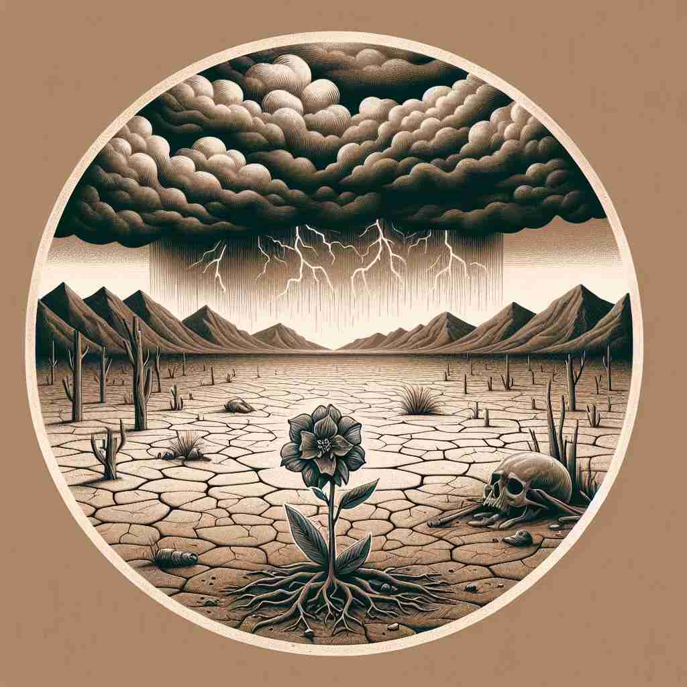
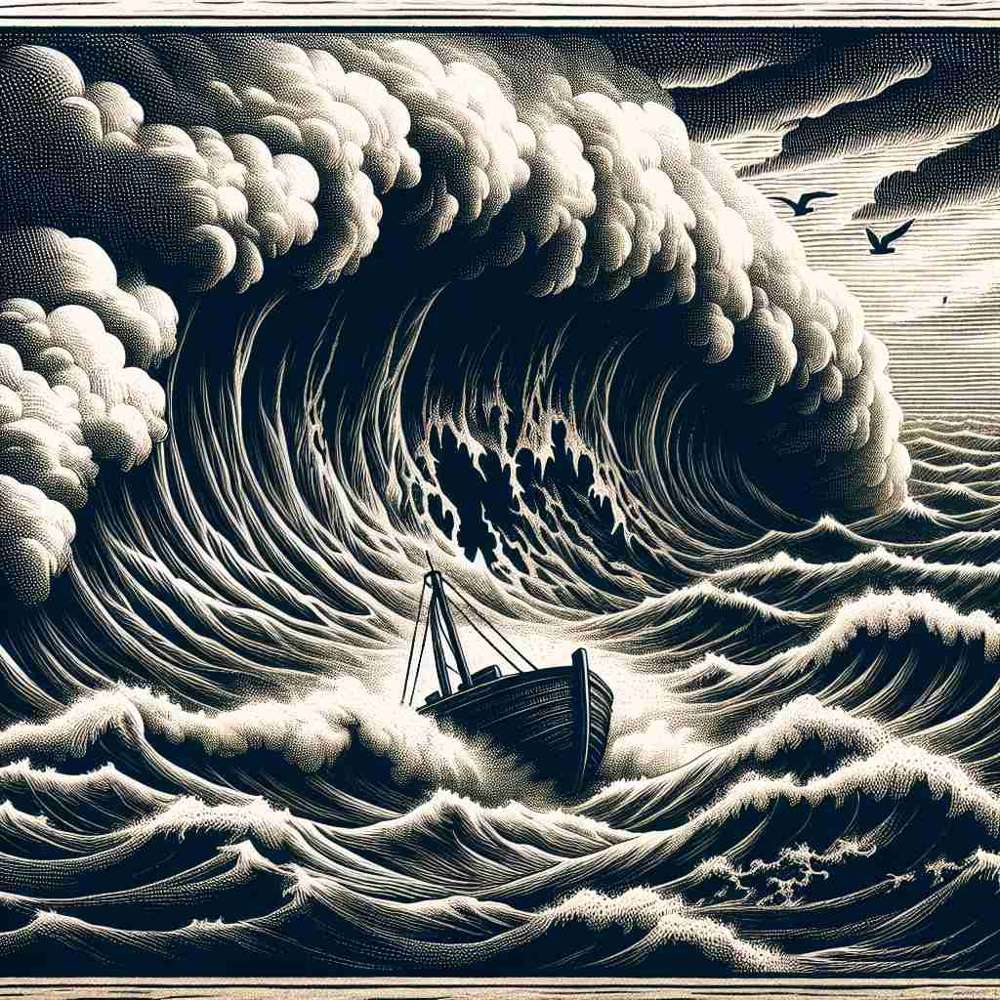

💬 The act of cruelty is evident in the lifeless landscape. 残酷的行为在毫无生气的景观中显而易见。

💬 The sailors faced the cruelty of nature during the storm. 水手们在风暴中面临着大自然的残酷。
💬 The scene shows cruelty to animals, as the man threatens the small creature. 这一幕展示了对动物的残酷，因为那人威胁到了这个小生物。

💬 The knight's act of cruelty was shocking to everyone watching. 骑士的残酷行为令所有观看的人感到震惊。
🧠 想象'cruelty'是一把锋利的刀，能够造成痛苦。这把刀可以是行为（核心含义），也可以是一个人的品质，甚至是单一的残忍行为。这个核心概念甚至可以扩展到非生命体的严酷性，如恶劣的天气。通过这个锋利刀的比喻，你可以更容易理解和记忆'cruelty'的各种含义。
🔈 ['krʊəltɪ]
🗝️ n. behaviour that deliberately causes pain or suffering to others 故意给他人造成痛苦或折磨的行为
🎭 在一个古老的斗兽场里，观众们热切地注视着中心，一位统治者冷漠地指挥着战士与野兽搏斗。为了取悦群众，他故意引发痛苦和折磨，这在行为上体现了“cruelty”的含义。
💬 The cruelty of his actions shocked everyone. 他行为的残酷让所有人震惊。
🌳 由基本词 "cruel"（残酷的）加上名词后缀 "-ty" 组成，表示 "残酷，残忍的行为"。
🕸️ 1. cruel: 残酷的 2. brutality: 残暴 3. gentility: 文雅
💡 记忆 "cruelty" 时，可以联想 "cruel" 表示残酷，加上 "-ty" 表示一种性质或状态，'残酷的状态'即为残忍行为。